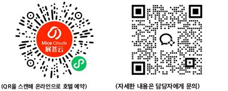

호텔 안내
1. 선전 제뤼(捷旅) 국제회의전시 유한회사
제28회 중국 국제 하이테크 성과 교역회의 지정 호텔 접수 대행사인 선전 제뤼 국제회의전시는 고급 전시 서비스 전문 회사입니다. 전시 기간에 전문 인력이 귀국 항공권, 호텔 예약, 차량 임대, 비즈니스 여행 등을 지원합니다.
상담 전화 ①: +86-755-8288 0090 (쩡순핑)
상담 전화 ②: +86-755-8288 0055 (쩡메이잉)
휴대전화/위챗: 17722570869(쩡순핑), 18025319960(쩡메이잉)
예약 사이트: www.miceclouds.com/bookingquery.htm?id=2798
예약 메일: service@bestmeeting.net.cn

(1) 추천 호텔표
| 번호 | 등급 | 호텔명 | 객실 | 가격 | 조식 | 아침·저녁 셔틀 | 주소 | 전시장 거리 | 지하철 출구 | 전시장까지 소요 |
| 1 | 5성 | 인터컨티넨탈 선전 월드 엑스포 (深圳国际会展中心洲际酒店) | 디럭스 킹 | 850 | 조식 1인 | 셔틀 포함 | 선전시 바오안구 푸하이 가도 잔청 커뮤니티 푸위안2로 93호 | 800m | 궈잔북역 A출구 | 도보 15분, 차량 약 5분 |
| 디럭스 트윈 | 850 | 조식 2인 | ||||||||
| 2 | 5성 | 크라운플라자 선전 월드 엑스포 (深圳国际会展中心皇冠假日酒店) | 슈페리어 킹 | 750 | 조식 1인 | 셔틀 포함 | 선전시 바오안구 잔윈로 6호 | 400m | 궈잔남역 C출구 | 도보 7분, 차량 약 3분 |
| 슈페리어 트윈 | 800 | 조식 2인 | ||||||||
| 3 | 준5성 | 선전 퉁타이 메리어트 코트야드 (深圳同泰万怡酒店) | 디럭스 킹 | 700 | 조식 1인 | 셔틀 포함 | 선전 푸하이 가도 바오안대로 6259호 | 5.3km | 푸융역 A출구 | 차량 약 15분 |
| 디럭스 트윈 | 750 | 조식 2인 | ||||||||
| 4 | 준5성 | 선전 하오웨 그랜드 스카이라이트 (深圳澔悦格兰云天国际酒店) | 슈페리어 킹 | 548 | 조식 2인 | 셔틀 포함 | 선전 사징 가도 민주대로와 진청중로 서쪽 교차로 | 5.2km | 하이상톈위안둥역 B출구 | 차량 약 15분 |
| 슈페리어 트윈 | 548 | 조식 2인 | ||||||||
| 5 | 준4성 | 무쓰 헬스 슬립 호텔 궈잔역점 (慕思健康睡眠酒店) | 슈페리어 킹 | 538 | 조식 2인 | 셔틀 포함 | 선전 푸하이 가도 잔청 커뮤니티 푸위안2로 롄허공업단지 B3동 | 960m | 궈잔북역 A출구 | 도보 18분, 차량 약 6분 |
| 슈페리어 트윈 | 538 | 조식 2인 | ||||||||
| 6 | 준4성 | 선전 더진 전시 국제호텔 (深圳德金会展国际酒店) | 디럭스 킹 | 450 | 조식 2인 | 셔틀 포함 | 선전 푸하이 가도 푸위안1로 38호 | 1.5km | 푸하이시역 A출구 | 차량 약 8분 |
| 디럭스 트윈 | 450 | 조식 2인 | ||||||||
| 7 | 3성 | 선전 월드 엑스포 그랜드 스카이라이트 (深圳国际会展格兰云天大酒店) | 비즈니스 킹 | 450 | 조식 2인 | 셔틀 포함 | 바오안구 사징 가도 빈장대로 66호 | 500m | 후이잔청역 B출구 | 도보 약 5분, 차량 약 3분 |
| 비즈니스 트윈 | 450 | 조식 2인 | ||||||||
| 8 | 준4성 | 더진 가든 호텔 전시센터점 (德金花园酒店) | 디럭스 킹 | 418 | 조식 2인 | 셔틀 포함 | 선전시 바오안구 차오허로 315-5호 | 1.5km | 푸하이시역 A출구 | 차량 약 8분 |
| 디럭스 트윈 | 418 | 조식 2인 | ||||||||
| 9 | 준4성 | 창다 국제호텔 전시센터 화파 빙쉐스제점 (昌达国际酒店) | 슈페리어 킹 | 388 | 조식 2인 | 셔틀 포함 | 선전 바오안구 사징 가도 허이 커뮤니티 진청로 신싼양공업구 3동 | 2.8km | (이름 없음) | 차량 약 8분 |
| 슈페리어 트윈 | 388 | 조식 2인 | ||||||||
| 10 | 비즈니스급 | 랑웨 호텔 푸하이시역점 (朗悦酒店) | 샹웨 킹 | 358 | 조식 2인 | 셔틀 포함 | 선전 바오안구 푸위안1로 푸하이 국제과학기술단지 C구 C2동 | 1.4km | 푸하이시역 D출구 | 차량 약 6분 |
| 샹웨 트윈 | 358 | 조식 2인 | ||||||||
| 11 | 3성 | 비엔나 인터내셔널 호텔 선전 푸융 전시센터점 (维也纳国际酒店) | 디럭스 킹 | 348 | 조식 2인 | 셔틀 포함 | 선전시 바오안구 푸융 탕웨이 융푸로 254호 | 3.4km | (이름 없음) | 차량 약 14분 |
| 디럭스 트윈 | 348 | 조식 2인 | ||||||||
| 12 | 3성 | 선전 하이상톈위안 호텔 (深圳海上田园酒店) | 킹룸 | 338 | 조식 2인 | 셔틀 포함 | 선전 바오안구 사징 서부 하이상톈위안 관광구 | 6.5km | (이름 없음) | 차량 약 21분 |
| 트윈룸 | 338 | 조식 2인 | ||||||||
| 13 | 3성 | 선전 더진 신하오 국제호텔 (深圳德金鑫豪国际酒店) | 디럭스 킹 | 328 | 조식 2인 | 셔틀 포함 | 선전시 바오안구 하오예로 31호 | 3.5km | 차오터우시역 A출구 | 차량 약 15분 |
| 디럭스 트윈 | 328 | 조식 2인 | ||||||||
| 14 | 3성 | 메이성 수이롄 호텔 전시센터점 (美生睡莲酒店) | 디럭스 킹 | 288 | 조식 2인 | 셔틀 포함 | 바오안구 푸융 가도 충칭로 푸얼다공업구 2동 상업건물 | 3km | 푸하이시역 A출구 | 차량 10분 |
| 디럭스 트윈 | 288 | 조식 2인 | ||||||||
| 15 | 2성 | 훙하이 호텔 궈잔남역점 (红海大酒店) | 아늑한 킹 | 268 | 조식 2인 | 셔틀 포함 | 바오안구 푸하이 가도 충칭로 73호 메이성공업단지 2호동 | 2.1km | 궈잔남역 A출구 | 차량 약 8분 |
| 아늑한 트윈 | 268 | 조식 2인 | ||||||||
| 16 | 2성 | 보하오 호텔 전시센터점 (铂豪酒店) | 킹룸 | 238 | 포장 조식 | 셔틀 포함 | 선전 바오안구 항청 가도 싼웨이 커뮤니티 윈창로 289호 | 6.9km | 하오샹역 D출구 | 차량 약 30분 |
| 트윈룸 | 238 | 포장 조식 |
참고:
1. 위 가격에는 15% 봉사료와 세금, 전시 기간 호텔-전시장 아침·저녁 왕복 셔틀 요금이 포함되며, 모든 비용은 위안화로 정산합니다.
2. 전시장 내 소형 택배 수령과 보관을 무료로 제공합니다.
3. 선결제 가격은 대행사에 미리 결제하는 금액입니다. 객실 보증을 위해 숙박비 100%를 선결제해야 하며, 결제하지 않은 객실은 확보되지 않습니다.
4. 선전의 다른 호텔을 예약하려면 대회 지정 대행사에 문의하세요.
(2) 차량 서비스
선전 제뤼 국제회의전시는 연계 서비스 플랫폼과 다양한 협력사를 갖추고 있어, 방문객의 개별 요구에 맞춘 안전한 차량 서비스를 제공합니다.
공항 픽업·호텔 셔틀 요금:
| 구간 | 차종 | 할인 가격(위안) |
| 선전공항-바오안구 각 호텔 | 뷰익 GL8 | 편도 450 |
| 22인승 | 편도 700 | |
| 45인승 | 편도 850 | |
| 53인승 | 편도 950 | |
| 선전 바오안구-선전 국제회의전시센터 | 45인승 (아침·저녁 운행) | 왕복 1,200 |
| 53인승 (아침·저녁 운행) | 왕복 1,300 | |
| · 편도 요금에는 유류비, 통행료, 서비스료, 기사 팁, 세금이 포함됩니다. · 일일 대절 요금에는 주차비와 기사 식비가 포함되지 않습니다. 시간 초과는 뷰익·22인승 시간당 100위안, 45~53인승 시간당 150위안, 거리 초과는 km당 10위안입니다. 대기 초과는 시간당 100위안이며 30분 이내는 무료입니다. 픽업 안내판은 개당 50위안입니다. · 위 요금은 평시 기준이며 실제 이용 시간과 일정에 따라 정산합니다. |
(3) 기타 서비스
| 기본 영어 통역 (1인 1일 8시간 800위안부터) | 화분 (개당 150위안부터) | 사진 촬영 (카메라 1대 2,000위안) |
| 부스 근무 인력 (1인 1일 8시간 300위안부터) | 현수막 (개당 150위안부터) | 영상 촬영 (카메라 1대 2,000위안) |
| 일반 행사 도우미 (1인 1일 8시간 550위안부터) | 배너 스탠드 (개당 180위안부터) | 속기 (1인 2,000위안) |